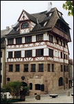
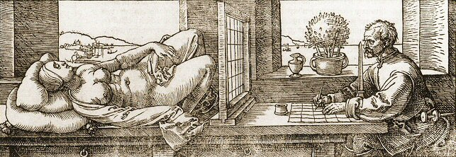

|
Biografie
 Der aus Ungarn stammende Goldschmied Albrecht Dürer, der später der Ältere genannt wird, lässt sich im Jahr 1455 in der für seine Händler, Goldschmiede, Drucker und Denker bekannten Stadt Nürnberg nieder.
Sein
am 21. Mai 1471 geborener Sohn Albrecht geht von 1483 bis 1486 bei seinem Vater in die Lehre bevor er am 30. November 1486 im Atelier des Malers Michael Wolgemut aufgenommen wird. Nach einer dreijährigen Ausbildungzeit begibt sich Albrecht Dürer auf die Wanderschaft. Aus dieser Zeit stammt die Vorliebe des Künstlers für Präzision und Details, die vor allem in seinen Grafiken zum Ausdruck kommt. Zu seinen ersten Werken gehört das Selbstportrait mit Silberstift, das er im Jahr 1484 im Alter von 13 Jahren anfertigt, und das Gemälde Dürers Vater aus dem Jahr 1490.
Dürer macht sich auf den Weg zu
dem berühmten deutschen Kupferstecher Martin Schongauer, der jedoch vor seinem Eintreffen Ende 1491 stirbt. So wird er 1492 von den Brüdern Schongauers in Kolmar empfangen. Anschließend reist er weiter nach Basel, wo er seinen ersten Holzschnitt anfertigt. Anschließend geht es weiter nach Strasburg.
Von Willibald Pirckheimer unterstützt studiert Dürer das Werk Mantegnas bevor er vom Sommer 1494 bis zum Sommer 1495 nach Italien reist. Die Darstellung der Rückenansicht weiblicher Formen erfährt unter dem Einfluss von Jacopo de Barbari eine Fortentwicklung. In einem Entwurf für ein Vorwort zu seiner Proportionslehre
(Ephrussi, Seite 66-67) schreibt Dürer: „Ich
habe niemanden gefunden, der über die Proportionen des menschlichen
Körpers geschrieben hätte, mit Ausnahme eines in Venedig
geboren Jacobus, der ein ausgezeichneter Maler ist. Er hat mir einen
Mann und eine Frau gezeigt, die er unter Berücksichtigung bestimmter
Maße gezeichnet hatte. Mir liegt nicht so sehr daran, unbekannte
Gefilde zu erkunden als seine Theorien kennenzulernen.” 1494 kommt es zu einem Zusammentreffen.
Als herausragende Persönlichkeit
der deutschen Renaissance reist Dürer zwei Mal nach Italien, um
sich in eine Tradition einweihen zu lassen, die mit der Ankunft aus
Konstantinopel fliehender byzantinischer Gelehrter im Anschluss
an die Eroberung der Stadt durch die Türken unter dem Herrscher
Mehmed II. wiederentdeckt worden war. Albrecht Dürer reist zum
ersten Mal im Jahr 1494 als junger Künstler nach Italien, als
er gerade seine Ausbildung bei Michael Wolgemut und den Brüdern
Schongauer in Kolmar beendet hat. Im Alter von 34 Jahren reist er
als reifer Künstler noch einmal in das sonnige Land am Mittelmehr.
Dort trifft er den Franziskanermönch Luca Pacioli di Borgo, der ihn
mithilfe der Göttlichen Proportion von Platon und
Pythagoras den Goldenen Schnitt lehrt. Vier Jahre später, also
im Jahr 1509, verfasst Luca Pacioli De Divina
proportione (Die göttliche Proportion).
1498 druckt Albrecht Dürer
mit dem fünfzehn Holzschnitte umfassenden Zyklus der
Apokalypse sein erstes bedeutendes Werk als selbstständiger
Herausgeber auf eigene Kosten. Besondere Beachtung finden auch die Kupferstiche Ritter, Tod und Teufel und Melancholia I.

Dürer hat sich die Techniken
der italienischen Malerei nicht nur angeeignet, sondern auch perfektioniert. Aus seinen Schriften und Studien über Proportionen und Verkürzungen lässt sich entnehmen, dass der Künstler auf seiner zweiten Italienreise (1505-1506) ein möglichst umfangreiches Wissen über die verschiedenen Methoden der Perspektivenmalerei sammeln wollte. Dementsprechend hat er sich mit der naturgemäßen Gestaltung beschäftigt (wie vor ihm Léon Battista Alberti), dem System der dreidimensionalen Quadraturmalerei (das wahrscheinlich zum ersten Mal von Mantegna verwendet wurde und das Übertragen der menschlichen Formen auf Quadrate und Parallelogramme ermöglicht) und dem System zur Konstruktion von Perspektiven von der Kavalierperspektive bis hin zur Verkürzung (die zweifelsohne auf Piero della Francesca zurückzuführen ist, jedoch zum ersten Mal in dem von Cousin im Jahr 1560 verfassten Werk in allen Einzelheiten erläutert wird).
In den Jahren 1517 und 1518 hält
sich Albrecht Dürer zunächst in Bamberg, später in Augsburg auf. Anschließend reist er in die Schweiz und dann weiter nach Flandern, wo er Erasmus von Rotterdam und die Maler Quentin Metsys und Joachim Patinir trifft.
Im Jahr 1525 veröffentlicht der Künstler auf eigene Kosten die Vnderweysung
der messung mit dem zirckel vnd richtscheyt,in der er die Malerei
nicht mehr den mechanischen Künsten sondern aufgrund ihrer eindeutigen
Verwandtschaft mit der Mathematik und der Geometrie vielmehr
den freien Künsten zuordnet. 1527 veröffentlicht Albrecht Dürer
in Nürnberg die Ferdinand I, König von Böhmen und Ungarn gewidmete
Schrift Etliche vnderricht, zu befestigung der Stett,
Schloß und Flecken . Im darauffolgenden Jahr erscheint kurz vor seinem Tod sein drittes theoretisches Werk, die Proportionslehre.
∆
Biografie
1471: Albrecht Dürer wurde am 21. Mai als drittes Kind des gleichnamigen Goldschmieds Albrecht Dürer und seiner Frau Barbara Holper, Tochter seines Meisters, in Nürnberg geboren. Der Vater Dürers stammt aus Ungarn. Aus der Ehe gehen insgesamt 18 Kinder hervor.
1475: Am 12. Mai kauft Albrecht Dürer der Ältere ein Haus in Nürnberg, Ecke Obere Schmiedgasse / Burgstrasse.
1481-1482: Besuch der Lateinschule Sankt Lorenz.
1483-1486: Lehre in der Goldschmiedewerkstatt seines Vaters.
1484: Ausführung des ersten Selbstbildnisses (Selbstbildnis mit Silberstift).
1486-1489: Lehre bei dem Nürnberger Maler Michael Wolgemut.
1490-1494: Dürer begibt sich auf Wanderschaft nach Kolmar, Basel und Strasburg.
1494-1495: Reise nach Italien.
1494: Ehelichung der Nürnberger Bürgerstochter Agnes Frey.
1495: Gründung einer Holzschneide-Werkstatt im Nürnberger Elternhaus.
1505-1507: Reise nach Italien (Bologna, Florenz, Rom) und Aufenthalt in Venedig.
1509: Kauf eines Hauses beim Tiergärtner Tor. Dürer wird Mitglied des Nürnberger Stadtrats.
1512: Kauf eines Gartens vor dem Tiergärtner Tor. Dürer tritt in den Dienst von Kaiser Maximilian I.
1515: Kaiser Maximilian bewilligt Dürer eine jährliche Rente von 100 Gulden auf Lebenszeit. Dürer fertigt seine ersten Kupferstiche an.
1518: Im Sommer hält sich Dürer
als Mitglied der Nürnberger Delegation in Augsburg auf. In dieser Zeit entstehen Portraits von dem Bankier Jakob Fugger, dem Maler Hans Burgkmair, dem Kardinal Albrecht von Brandenburg und dem Kaiser Maximilian I.
1519: Im Frühjahr unternimmt der Künstler eine Reise nach Zürich (Schweiz).
1520: Im Juli reist er mit seiner Frau in die Niederlande. Das Paar besucht Frankfurt und Köln. Im August lässt sich Dürer für einen einjährigen Aufenthalt im französischen Anvers nieder. Im Oktober folgt ein Aufenthalt in Aachen, um der Krönung von Kaiser Karl V. beizuwohnen, und im November bestätigt der Kaiser in Köln die Zahlung seiner jährlichen Rente. Aufenthalt in Brüssel, Gand, Brügge. Dürer erkrankt an Malaria.
1521: Im Frühjahr hält sich Dürer erneut im französischen Anvers auf, wo er im April mit Lucas de Leyde zusammentrifft. Am 12. Juli kehrt Dürer nach Nürnberg zurück.
1524: Beginn des Schreibens einer Familienchronik und eines Tagebuchs. Lucas Cranach der Ältere besucht Nürnberg; Dürer zeichnet sein Portrait sowie das von Friedrich dem Weisen, Kurfürst von Sachsen.
1527: Schwere Erkrankung.
Veröffentlichung der Schrift „Etliche
vnderricht, zu befestigung der Stett, Schloß und Flecken” , die er dem Bruder von Karl V. und König von Böhmen und Ungarn widmet.
1528: Hans Sebald Beham veröffentlicht ohne Dürers Genehmigung sein Werk über die Proportionen des Pferdes. Des Plagiats bezichtigt flüchtet sich Hans Sebald Beham nach Nürnberg.
1528: Albrecht Dürer stirbt
am 6. April in Nürnberg im Alter von 57 Jahren. Seine sterblichen Überreste ruhen auf dem Johannis-Friedhof in Nürnberg. Seine Frau erbt sein gesamtes Vermögen.
∆
Die Werke
Dürers wurden von folgenden Personen ausgeführt:
ALDEGREVER Heinrich (1502-a.1561) ; BARTSCH Adam von (1757-1821) ; BRY Théodore de (c.1527-1598) ; ESSEN Johann van ; GOOSEN Jan van (a.1667-1668) ; HOLLAR Wenzel (1607-1677) ; JONGHE Clément de (a.1640-1679) ; LADENSPELDER Johannes (1512-p.1561) ; LEYDEN Lucas van (1494-1533) ; Meister APM ; Meister GVS ; Meister HS ; Meister IB ; Meister L ; Meister MC ; Meister PM (c.1480) ; MATHES Nicolaus C. ; MECKENEM Israël van (c.1445-1503); MOMMARD Johann (a.1590-1627) ; MONTAGNA Benedetto (c.1481-1558) ; ORLEY Bernaert van (c.1488-1541) ; PETRAK Aloïs ; RAIMONDI Marcantonio (1480-1534) ; ROTA Martino (c.1520-1583) ; SOLIS Virgile (1514-1562) ; STOCK Andries (c.1580-c.1648) ; SUAVIUS, ZUTMAN Lambert dit (c.1510-c.1567) ; WENZEL VON OLLMUTZ (a. 1481-1497) ; WIERIX Jan (c.1549-p.1615) ; WIERIX Jérôme (c.1550-1619) ; ZOAN Andrea (a.1475-1505)
Kupferstecher, die in der Werkstatt von Albrecht Dürer gearbeitet haben:
BEHAM Barthel (1502-1540) ; BEHAM Hans Sebald (1500-1550) ; PENCZ Georg (1500-1550)
∆
|